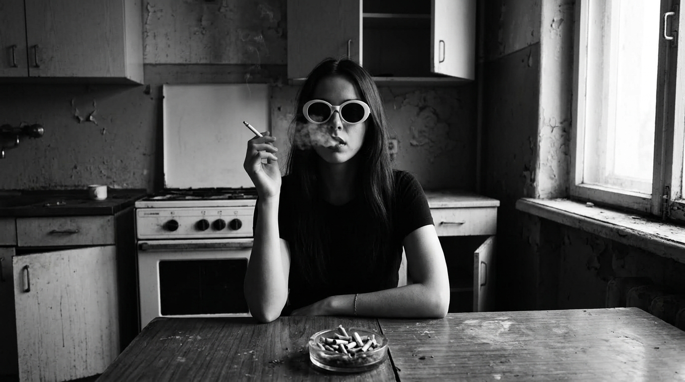

Растворяюсь

Новый релиз Cristie_music
Послушать


Содержание
С чего все началось
Это очень необычный и личный релиз. И его будет сложно понять с первого раза. Но давай попробуем?
Давай я расскажу с чего все началось. В конце прошлого года, я начала делать кавер на песню Don't mind me, ее исполняет Lil Bo Weep. Эту песню, я услышала примерно два года назад. И когда я делала кавер, я начала изучать лицензионные вопросы и решила, а почему бы мне, просто ей не написать (я иногда так делаю)? Оказалось что она умерла. Ей было всего 22 года. Меня переклинило.
Я просто не поверила. Я пошла читать и охренела от ее истории. Я поняла что не смогу отпустить это. Но это совпало с моим собственным кризисом смыслов, ведь в тот момент я работала над Бездной.
Я поняла что тема её зависимости, боли, как она пришла к этому и что ее в итоге уничтожило, меня не отпустит. В это время, мне очень хотелось вернуться к тому с чего я когда-то начинала, к той музыке, но у меня не было формы.
Я подбирала свои старые рифы и все было не то. И когда, я окунулась в ее историю, я поняла что я хочу сделать. Я хочу не только выразить боль и посвятить трек Lil Bo Weep, я хочу снова упасть головой в гранж (даже если снова не получится), я хочу посвятить трек музыкантам, чьи жизни оборвались из-за зависимости. Мне повезло, я не имела дел с веществами, хотя окружение в то время располагало и это было круто в общих кругах. Хз, почему я в это не попала.
Я хочу показать и донести эту мысль и боль, через музыку и клип и вернуть себя назад, вернуться к тому, что я когда-то делала, ведь начинала я с гранжа.
Но, вот беда. У меня нет опыта этой боли, я не могу написать так текст, правда?
Оказалось могу. Но я проживаю чужую боль, я представляю какого было ей и другим, я представляю что было бы со мной, если бы я себя уничтожила, если бы я потеряла самых близких или ребенка, как это было у Вайноны (Lil Bo Weep). Честно, мне было очень сложно. Именно окунуть себя в это. Прожить.
Когда я делаю треки, у меня нет плана куда все пойдет, я просто делаю как чувствую. С клипами также. Я представила образы кого я хочу показать и кто откликается лично мне. Лейн, Курт, Эми, Крис. Все они прошли через невероятную боль.
Отпечаток боли (Лейн, Курт, Крис, Эми, Вайнона)
Давай немного поговорим о них?
Лейн Стэйли - Человек легенда, икона гранжа. Итог - передозировка спидболом. Смерть 5 апреля, в тот же день что и Курт. На этом заканчивается история, той самой Alice in Chains (которую я так люблю). Для меня Alice in Chains особенная группа, треки Would, What the Hell Have I, Get Born Again - навсегда в моем сердце. Помню как на репетициях мы перепевали What the Hell Have I, помню как учила табы этой песни. Эта группа навсегда в моем плеере. Поэтому я не могла пропустить Лейна.
Курт Кобейн. Боже, как же я фанатела с Nirvana. У меня был период когда я заслушивала до дыр все альбомы, а моя любимая You Know You're Right, а сколько раз я пересматривала MTV Unplugged In New York? Даже в этом году, я заказала себе кассету с ним. Мне, особенно в подростковом возрасте, очень откликались страдания Курта, я бы сказала что в какой то момент я была на них помешана, слегка. Но я тогда не особо это понимала, мне просто нравилось страдать (да и поводы были). Читая его биографию, понимаешь что это был очень сложный человек, понимаешь как много ему удалось сделать и хоть Nirvana считается самой попсовой из гранжа, и в целом это понятно, но понимаешь как много могло бы быть подругому, будь он жив. И честно, мне бы хотелось вживую посмотреть на Курта, но увы, это невозможно. Особенно глупым кажется в его истории причина его зависимости, попытки погасить боль, странно что при его возможностях, тогда врачи не смогли ничего сделать. Либо он сам не хотел делать такой выбор? Кто знает.
Крис Корнелл. Я даже не знаю кого я люблю больше, Soundgarden или Audioslave? А его голос? Это просто наслаждение какое-то, это гранж, но он такой мелодичный, ты будто плывешь по волнам. На мой взгляд, именно структурой, мелодичностью, голосом и подачей уникальны Soundgarden и Audioslave. Я не хочу сказать что тут вся заслуга исключительно Криса, совсем нет, я с таким удовольствием учила соло и рифы Тома Морелло из Audioslave. Я даже заказывала себе звукосниматели как у него, педаль квакушка была куплена под влиянием Audioslave, я учила теппинг из-за Тома Морелло. Смерть Криса стала для меня неожиданностью. Суицид, доза теблеток перед этим. Треки Black Hole Sun, Like a Stone и другие, навсегда останутся со мной.
Эми Уайнхаус. Да, не гранж, но отрицать ее культовость просто невозможно. Я обожаю ее альбом Back to Black, ее голос, манеру, музыку, подачу. Я добавила ее потому что помню, как меня поразила ее смерть, мне она казалась бессмертной, чтоли? Ее история пронизана тяжелой зависимостью и показывает буквально, что даже самых красивых творческих людей можно уничтожить. Они перестанут творить, выступать, заряжаться, дарить миру то, что они лучше всего умеют - эмоции, чувства, музыку. Я не согласна с тем, когда говорят, что употребление дает буст или это необходимо для гения. Я думаю все проще, это просто легкий способ уйти от проблем, от всего, буквально перестать существовать. И это пугает, когда ты добровольно позволяешь себе исчезать. В клипе, Эми как зеркало - она показывает момент разрыва реальности и является отсылкой куда все идет.
Еще в клипе фигурирует отражение Брайана Джонса, да, это тоже не гранж, но мне хотелось почтить не только гранж музыкантов, но и показать что проблема глобальная для всех стилей музыки и групп. Его отражение в воде не случайно, это прямая отсылка на его смерть. Он утонул в бассейне, под воздействием алкоголя и наркотиков.
Теперь главное. История Вайноны Лизы Грин, она же LiL BO WEEP и Unaloon.
Ее история показывает, как влияет ранняя популярность на неокрепшую подростковую психику. Как легко вырвать человека из его спокойной жизни и как превратить ее в ад. То что с ней произошло - современная изнанка музыкальной индустрии. Людям нравилось ее меланхоличное творчество, но по факту за ним скрывалась реальная, невыносимая боль.
Все началось с ее переезда в Лос-Анджелес, ради карьеры. В своих последних видео она рассказывала что примерно с ее 15 лет ее использовали, обманывали, финансово эксплуатировали. Это привело к развитию тяжелой формы ПТСР. Как следствие, чтобы залечить душевные раны, у нее началась наркотическая зависимость.
Сюда же подключилось РПП, которое и ранее ее беспокоило, но теперь обрело совершенно иную форму. Одна из основных причин, которая повлияла на ее состояние - это потеря связи с семьеи, она находилась в зависимости от людей из местной музыкальной тусовки и индустрии. Ее парень использовал ее как ресурс, эмоционально и финансово, она неоднократно будет говорить что с подросткового возраста ее ломали как личность.
Ее партнер и окружение, не просто не помогали ей во время депрессии, а активно затягивали её в зависимость. Кульминацией, стала ее беременность и потеря ребенка. В одном из видео, после ее экстренной репатриации обратно в Австралию, силами родителей, она говорит что собирается пойти к океану и возложить цветы своей дочери и призывает всех кто хочет пойти вместе с ней. Она не смогла пережить гибель ребенка.
В марте 2022 года, она уходит из жизни из-за передозировки тяжелых медицинских препаратов и психоактивных веществ на фоне глубочайшего психоэмоционального кризиса.
Ее отец, Мэттью Шофилд Грин, подтвердил ее смерть и оставил в Facebook, разрывающий душу пост:
«В эти выходные мы проиграли битву за жизнь моей дочери против депрессии, травм, ПТСР и наркозависимости, с которыми мы неустанно боролись с тех пор, как вернули её из Америки... Она отчаянно сражалась со своими демонами, как и все мы рядом с ней, собирая осколки снова и снова, но она больше не могла бороться, и мы потеряли её».
Эта история меня поразила. Жизнь одного человека, всего 22 года и сколько боли, какой резкий взлет и какое падение? Я просто не смогла пройти мимо.
Звук, кассета и отсылки в треке
Я добавила в музыку, текст, клип большое кол-во отсылок, чтобы картина была максимально полной, чтобы ты окунулся в этот мир. Давай я тебе покажу?
Трек начинается с шума моря, это не просто шум. Я записала на диктофон мое любимое Балтийское море, на берегу Куршской косы. Вместе с ним, ты слышишь шипение пустой кассеты и щелчок моего плеера. Мы начинаем спокойно. В клипе, в эти моменты летит самолёт, он показывает начало катастрофы, именно когда Вайнона покидает Австралию и переезжает в штаты, ее жизнь начинает рушиться. В клипе, я показываю не только отсылки на великих музыкантов, я показываю как параллельно идёт деградация жизни, личности, как мы приближаемся к грани. Черный ворон показывает как мы погружаемся во тьму.
В моей песне есть строчка — «Был ли в ней выбор? Наверное да, я пошла за тобой, потеряла себя». Это прямая параллель с тем что произошло с Вайноной в США.
А строки «Он растворяет мою пустоту / Я больше не слышу в ответ тишину» показывают причины зависимости, это не развлечение, это не кайф, это попытка хоть как-то заглушить боль внутри.
«Дружба? Счастье? Мне показалось / За мной след? Это опасно?»
Эти строки подчеркивают ПТСР на фоне употребления и тяжелой зависимости. Эта песня не романтизация зависимости - это открытая рана, показывающая как это уничтожает личность. Как на это влияет общество.
Вернёмся немного к звуку. Я специально купила педаль форк bigmuff, пропустила его через лампу, чтобы получить грязный звук. Отдельно я записала ее гудение, его ты можешь услышать в проигрышах. Часть дорожек намерено состарена а ещё часть я перезаписала на реальную пленку и вернула обратно в цифру, чтобы передать этот шершавый звук. В треке несколько гитар, основные партии на bigmuff, другая часть на amt ss20. Я не старалась передать ровный звук, мне хотелось передать грязь. В некоторых местах ритм ударных намеренно сбивается , это микро отсылка к другому треку Unaloon - Im not one to cry, где ритм прыгает. А еще, когда-то я играла, хоть и паршиво на ударных и мне всегда нравилось, когда ритм немножко прыгал, это придает что-то живое. В один момент, припев меняется, я это делаю намеренно, это отчаяние, это срыв, это разрушение.
В тексте есть личные отсылки:
«Ты умерла, мне ничего не нужно, я не дышу, я не слушаю.»
Тут три отсылки. Первая, моя. Я представляла что у меня больше нет любимого человека рядом. Я не смогу так жить, это реально меня убивает, без любви нет смысла. Вторая, это Lil Bo Weep. Ее смерть, мой триггер. Третья, дочь Lil Bo Weep, я не представляю что она пережила, как пережить смерть ребенка? А ее последние слова, когда она обращается к слушателям и предлагает вознести цветы для дочери у океана. Я не могу это смотреть.
«Умираю за январь и за февраль, наступает март а в ответ тишина, надеюсь что в апреле растаю сама.»
Это отсылка с самой Lil Bo Weep, она умерла в марте.
«Я пошла за тобой, потеряла себя.»
Это история про ее отношения и ее окружение, которое вместе с ее парнем и подсадило её на вещества и поощряло это. Она очень любила парня, от него и забеременела и в итоге вместе с зависимостью осталась одна.
Фраза в припеве - «боже спаси», это отсылка к треку Don't mind me, там тоже обращение к богу. А ещё, это последний крик о помощи, когда больше идти некуда, и увы, спасения в этой истории нет.
0:00
0:00
Визуальная часть и финал истории
Сама песня идёт как история, но не совсем линейная, мы ее слышим от человека, который уже умер, уже сломался, это эхо, отголосок, мертвый факт. Мы можем только попытаться почувствовать эту боль и принять решение, а хотим ли мы такой путь? Почему об этом не говорят? Почему мы игнорируем разрушительность этих действий?
Почему всех тех людей, которые погубили Lil Bo Weep, не наказали? Потому что это норма, в этой тусовке. Я хочу просто это показать и не просто показать, а крикнуть - стой! Не надо! Но это утопия, наверное?
Мне очень откликнулась история Lil Bo Weep и мне безумно жаль, что ее больше нет.
Трек заканчивается спокойно, все кончилось, переход, мы снова слышим море, кассетный шум, в один момент я записала звук остановки кассеты. История закончилась. Мы в безопасности, но эта безопасность зависит только от нас самих.
Клип Растворяюсь
Вся эта история, сильно окунула меня в начало моего пути, тогда у меня была группа и мы играли гранж. Но знаете, тогда, я вообще не понимала зачем играю. Просто было круто и все. Сейчас, мне захотелось вернуться, но уже со смыслом и с той версией себя, какая я сейчас.
Спасибо тебе, что прочитал мой поток сознания. Я надеюсь мне удалось передать, те чувства, мысли и эмоции, которые я вложила в этот релиз.
Спасибо тебе за прослушивание.
Береги себя.